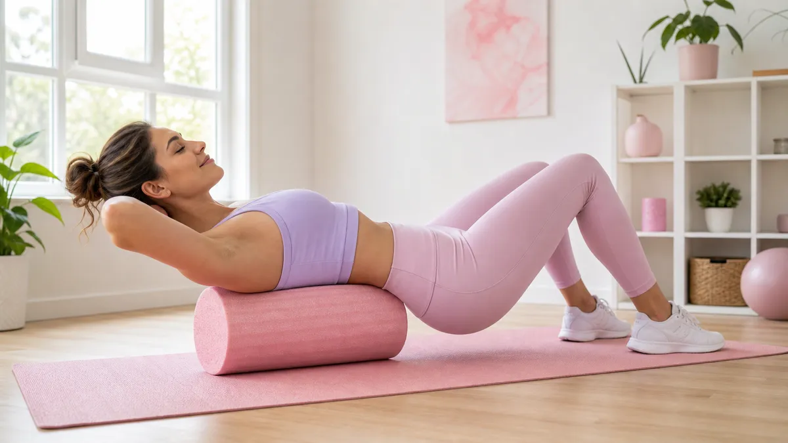

ストレッチポールとは？まず30秒で理解する
ストレッチポールは、円柱形の発泡素材でできたエクササイズ器具です。長さ約98cm・直径約15cmが標準サイズで、その上に寝るだけで背骨まわりの筋肉がゆるみ、姿勢のクセを整えるサポートをしてくれます。
「乗るだけ」という手軽さから、運動初心者の女性にも取り入れやすいアイテムとして人気が高まっています。
ストレッチポールの7つの効果
ストレッチポールを継続して使うことで期待できる効果を7つまとめました。
① 姿勢の改善
ポールの上に仰向けになると、重力によって肩甲骨が自然に開き、丸まった背中が伸びやすくなります。デスクワークで固まった胸まわりのストレッチに役立ちます。
② 体幹の安定
不安定なポールの上でバランスをとることで、インナーマッスル（深層筋）が自然に働きます。毎日10分の継続で、4〜6週間後に体幹の安定感を実感する方が多いです。
③ むくみのケア
ふくらはぎや太もものポールほぐしは、筋肉のポンプ作用を促し、血流やリンパの流れをサポートします。夕方のむくみが気になる方に特におすすめです。
④ 肩こり・腰の張りをほぐす
背骨に沿って乗るだけで、脊柱起立筋がじんわりほぐれます。1回5〜10分の使用でも、肩や腰の張り感が和らぐと感じる方が多いです。
⑤ 深い呼吸がしやすくなる
胸郭が開くことで横隔膜が動きやすくなり、自然と深い呼吸ができるようになります。深呼吸は自律神経のバランスを整えるサポートにもなります。
⑥ 骨盤まわりのリセット
骨盤の下にポールを当ててゆらゆら動かすエクササイズは、骨盤まわりの筋肉をゆるめ、左右差を整えるサポートになります。
⑦ 運動前後のコンディショニング
ウォームアップやクールダウンにポールを使うと、筋肉の柔軟性が上がり、翌日の疲労感が軽減されやすくなります。
🌿 基本乗り（2分）
ポールを縦に置き、頭〜お尻まで乗せて仰向けに。腕を左右に広げ、深呼吸を5〜6回繰り返す。胸が開く感覚を意識する。
💪 体幹バランス（2分）
基本乗りの姿勢から、片脚をゆっくり持ち上げて3秒キープ×左右5回。お腹に力を入れてぐらつかないよう意識する。
🦵 ふくらはぎほぐし（2分）
ポールをふくらはぎの下に横向きに置き、体重をかけながら前後にゆっくり転がす。左右各1分。むくみが気になる夕方に特に効果的。
🌸 背中ほぐし（2分）
ポールを横向きにして肩甲骨の下に当て、両手を頭の後ろで組む。上半身をゆっくり前後に動かし、背中全体をほぐす。
✨ 仕上げ深呼吸（2分）
再び基本乗りに戻り、目を閉じてゆっくり深呼吸。鼻から4秒吸って口から8秒吐く「4-8呼吸」を5回繰り返してリラックスで締める。
※個人差があります。痛みを感じる場合はすぐに中止してください。
ストレッチポールはダイエットに効果的？正直に解説
「ストレッチポールだけで痩せる」という表現は正確ではありません。ただし、以下の点でダイエットをサポートする役割が期待できます。
- 姿勢が整うことで、日常動作での消費エネルギーが増えやすくなる
- 体幹が安定し、ウォーキングや筋トレの質が上がる
- むくみが軽減されることで、見た目のスッキリ感につながる
- 自律神経が整い、睡眠の質が上がることで代謝リズムが整いやすくなる
ストレッチポールは「直接脂肪を燃やす」器具ではなく、「体を整えて他の運動や生活習慣の効果を引き出す」コンディショニングツールです。食事や有酸素運動と組み合わせることで、より効果を感じやすくなります。
日々の運動習慣を見直したい方は、ダイエット習慣の関連記事も参考にしてみてください。
効果を出すための3つのポイント
① 毎日同じ時間に行う
就寝前の10分に組み込むのがおすすめです。体がほぐれた状態で眠れるため、睡眠の質も上がりやすくなります。週5〜7日の継続が目安です。
② 呼吸を止めない
ポールの上で力んでしまうと効果が半減します。常に鼻から吸って口から吐く呼吸を意識し、筋肉をゆるめながら行いましょう。
③ 痛みが出たらすぐ中止
ポールに乗って「痛い」と感じる部位には乗らないでください。特に腰椎（腰の骨）に直接当てるのは避け、背中の筋肉に当てるよう位置を調整しましょう。
ストレッチポールの選び方：初心者向け3基準
市販のストレッチポールを選ぶ際は、以下の3点を確認しましょう。
- 長さ：身長155cm以上なら98cm以上が安心。頭からお尻まで乗れるサイズを選ぶ
- 硬さ：初心者は「ソフト〜ミディアム」が痛みなく使いやすい
- 耐荷重：自分の体重＋10kg以上の耐荷重があるものを選ぶと安心
Q. ストレッチポールはいつ使うのが一番効果的ですか？
就寝前30〜60分がおすすめです。筋肉がほぐれてリラックスモードになるため、深い睡眠につながりやすく、翌朝の体の軽さを感じやすくなります。朝の起き抜けに使うのも、体を目覚めさせる準備として効果的です。自分のライフスタイルに合わせて、毎日続けられる時間帯を選ぶことが最優先です。
Q. ストレッチポールは毎日使っても大丈夫ですか？
基本的に毎日使っても問題ありません。ただし、1回の使用時間は10〜20分を目安にしましょう。長時間使いすぎると筋肉が過度に刺激されることがあります。また、使用後に痛みや違和感が続く場合は、使用頻度を週3〜4回に減らして様子を見てください。腰痛や骨粗しょう症など持病がある方は、事前に医師に相談することをおすすめします。
Q. ストレッチポールで効果が出るまでどのくらいかかりますか？
個人差はありますが、週5回・1回10分の使用を継続した場合、多くの方が2〜4週間で「肩こりが楽になった」「呼吸が深くなった」などの変化を感じ始めます。姿勢の改善や体幹の安定感は6〜8週間の継続でより実感しやすくなります。焦らず、まずは1ヶ月の継続を目標にしてみましょう。
姿勢改善に特化した具体的な使い方・エクササイズステップはストレッチポールで姿勢改善する4ステップガイドで詳しく解説しています。